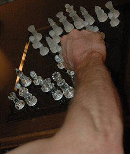
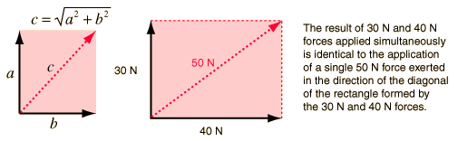
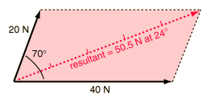
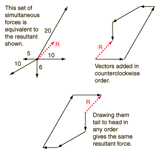
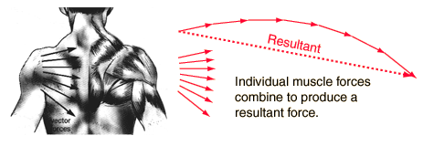

Directed Motion with Muscle Forces
|  | Your body has a finite number of muscles, but it can generate movement in an infinite number of directions. This chess player can move his hand to any of the chess pieces and move them in any direction on the board. The combination of the forces of different muscles in conjunction with the bones and connective tissue can combine to produce a force in any direction. The forces of various muscles and bones can be combined by vector addition to produce a resultant force in virtually any desired direction.
|
The addition of forces as vectors can be visualized geometrically. Starting with pairs of forces, consider the addition of two forces at right angles. The physical effect of the exertion of a 30 N force and a 40 N force at right angles will be identical to the exertion of a single 50 N force in the direction of the hypotenuse of the triangle formed by the 30 N and 40 N forces.

The vector sum of any two forces can be obtained geometrically by measuring the diagonal of the parallelogram formed by the vectors. They can also be determined using trigonometry by computing the components of the vectors and combining them to form a right triangle. Then the pythagorean relationship above can be used to find the resultant. To confirm the numbers at right, try the vector addition calculation. |
 |
|
 | A set of five forces are shown, acting on the same object. The resultant must be found before any prediction of its motion can be made. That resultant can be found by drawing the vectors tail to head in any order as shown at left.
While a graphical method of vector addition can be used for any number of vectors, the most practical method for vector addition involves the calculation of the components of all the vectors. For vectors in the xy plane, the x and y components can be combined to get the x and y components of the resultant. This can be converted to polar form to get the magnitude and direction of the resultant force.
|
In a muscle system like that of the shoulder, multiple muscles exert forces which combine as vectors to produce a net force for directed motion.

|
Index
Newton's laws
Standard mechanics problems |